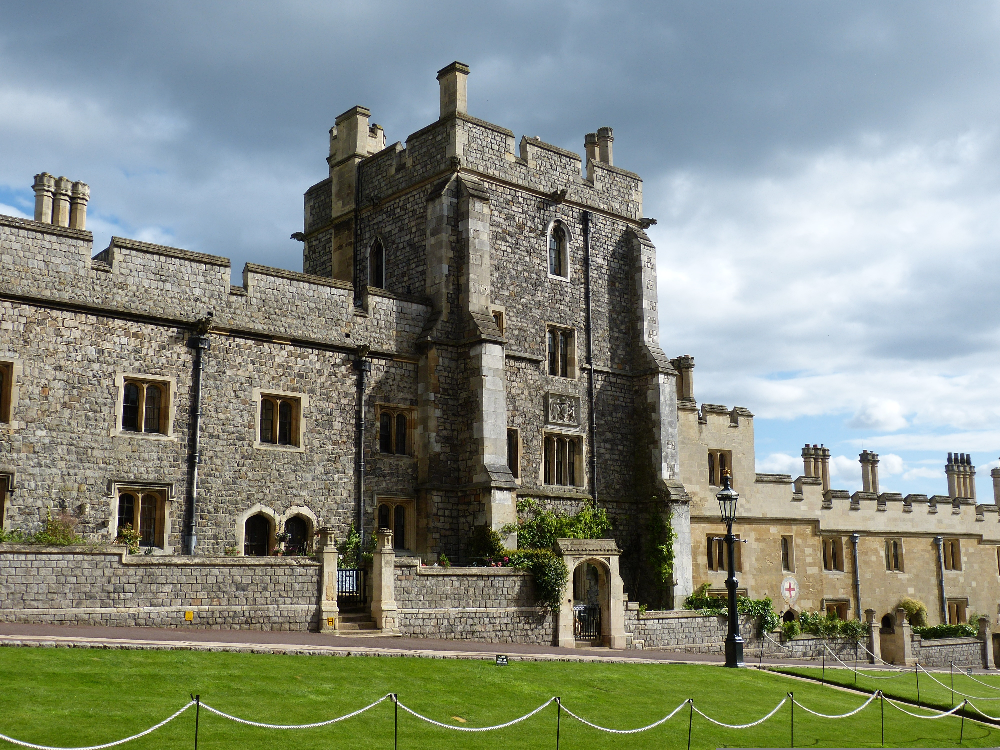

Castelo de Windsor
O Castelo de Windsor está localizado na Inglaterra e é considerado o maior castelo habitado do mundo.
Sua construção começou no século XI durante o reinado de Guilherme, o Conquistador. Ao longo dos séculos, o castelo foi ampliado e modernizado por diversos monarcas britânicos.
Atualmente, o Castelo de Windsor continua sendo uma das residências oficiais da família real britânica e recebe milhares de visitantes todos os anos.